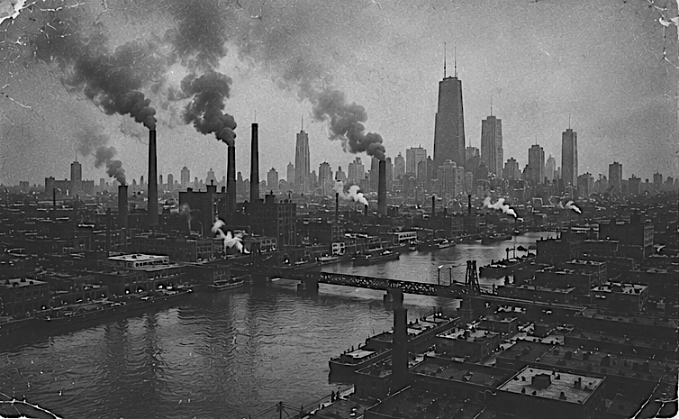
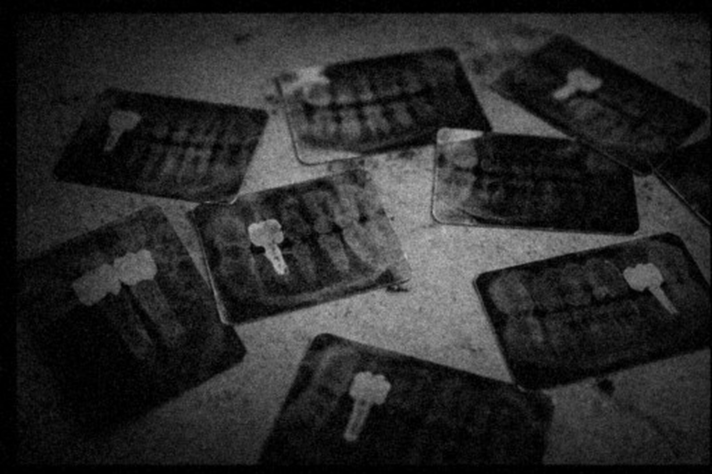
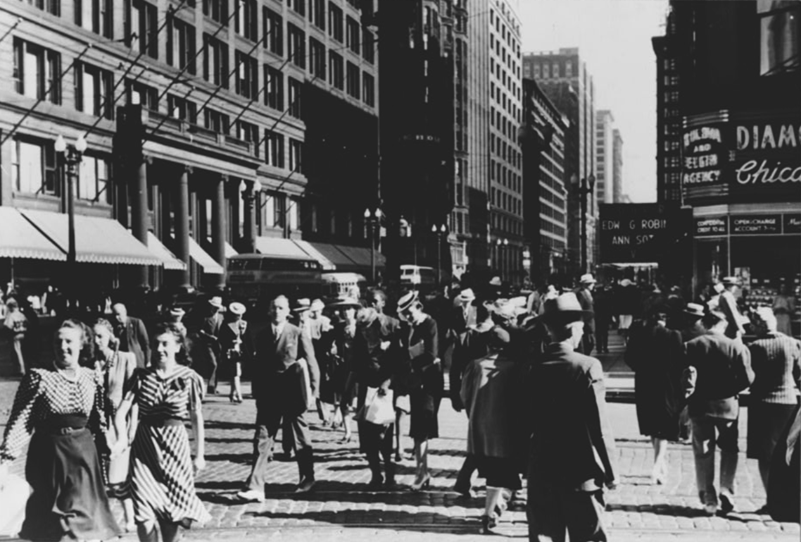

Dr. Aaron Whitaker
“The archive documents the work of Dr. Aaron Whitaker, a dentist and self-directed researcher active in Chicago between 1948 and 1965. Operating from a small private clinic, Whitaker pursued independent experimental practices alongside his professional activity, focusing on early forms of osseointegration.
The materials suggest a process driven by repetition and adjustment, in which non-conventional procedures were tested directly on patients.
His work appears to have developed outside established medical frameworks, with no evidence of formal validation or institutional oversight.”

Discovery of the Laboratory
The archive was discovered during renovation works in the building where Whitaker once practiced.
A concealed basement space—absent from the original floor plans—revealed a secondary laboratory used for experimental activity.
The recovered materials include dental radiographs, photographs of the workspace, medical instruments, biological samples, modified prosthetics, and handwritten clinical notes.
Originally lacking any systematic organization, the archive has been reconstructed chronologically based on internal evidence.
The documentation abruptly ends in 1965, with no official record of the clinic’s closure, suggesting a sudden interruption of Whitaker’s work.
The state of deterioration across all materials indicates long-term abandonment and improper preservation.

Historical Context
The archive is situated within the broader context of postwar Chicago, a major industrial center characterized by a large working-class population and limited access to structured healthcare systems.
During this period, private medical practices operated with significant autonomy, often outside institutional environments and with minimal oversight.
At the same time, dental implantology was still in an early experimental phase, allowing for informal and non-standardized procedures.
Within this context, Whitaker’s practice reflects both the possibilities and the risks of a largely unregulated medical landscape, where experimental research could develop without clearly defined boundaries.
